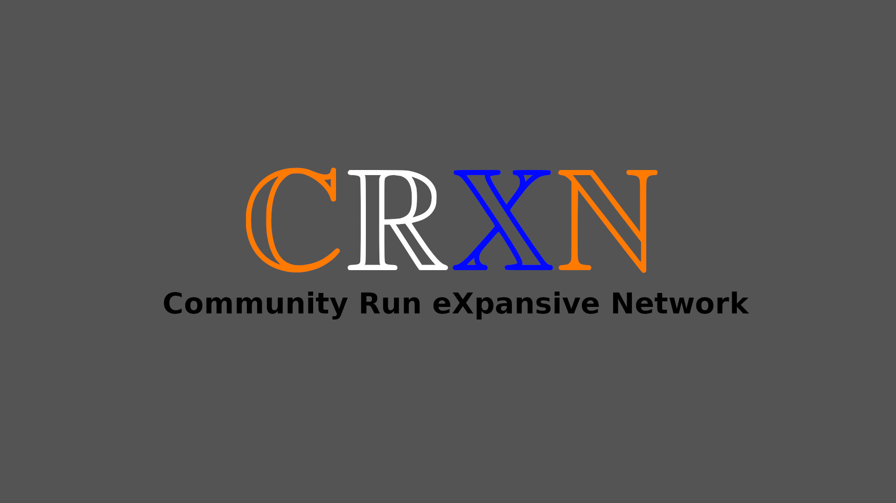

CRXN
Community Run eXpansive Network
What is CRXN?
CRXN is a community run IPv4-based computer network running
on the 10.0.0.0/8 (255.0.0.0) private subnet.
The purpose of the network is to experiment with networking
hardware and software and have a network
where people are free to run what they want, easily - as was
intended with IPv4.
Getting peered and assigned
Getting peered (via physical medium or over a tunnel) is the first
step of getting onto the network.
Secondly one will need to be assigned a subnet on the 10/8 range
and then have those details
entered into our (primitive) subnet allocations system (a text
file).
As for now you can contact deavmi at deavmi@disroot.org or contact
him via
the #crxn channel on the
BonoboNET IRC
network.
News
For now we don't really have a news source regarding the network
and its going-ons
but I, Deavmi, hve a Mastodon account that you can find on my
homepage where I often,
under the hash tag #CRXN, post updates about the project and what
I am doing to my part
of the network locally.